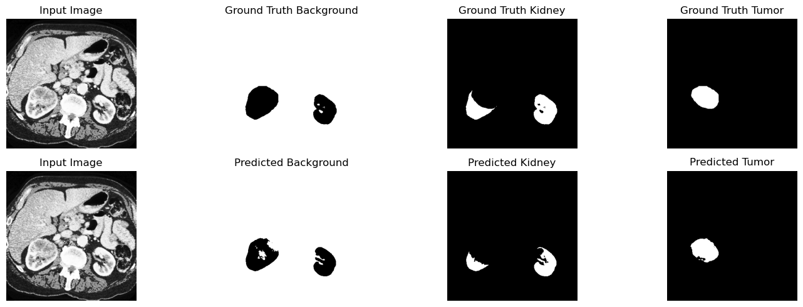
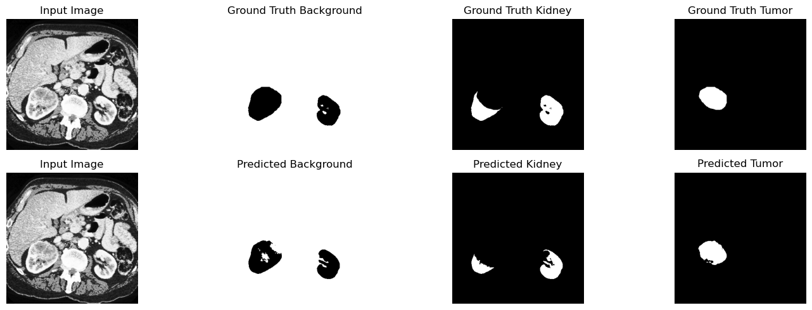
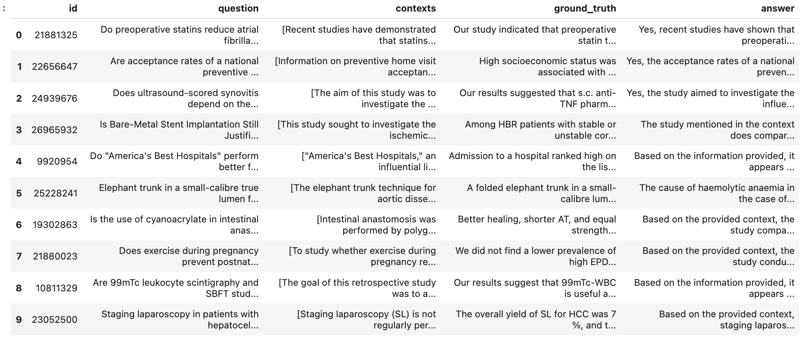
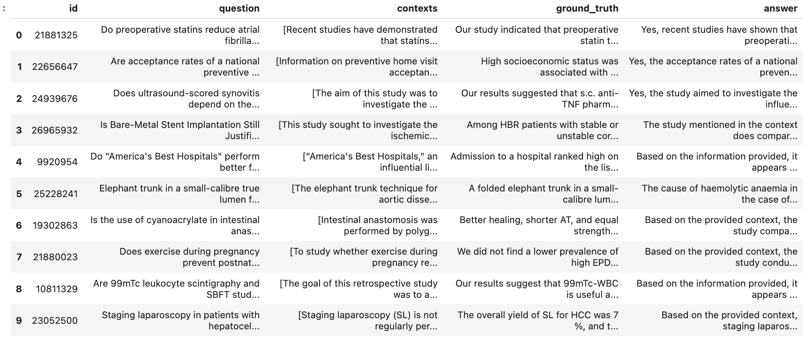
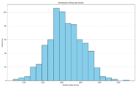
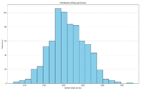

ABOUT
I am an M.A.Sc. student in Computer Engineering and a Graduate Research Assistant at the University of Guelph, Canada, with a Bachelor’s degree in Biomedical Engineering. My research interests include model architecture adaptation, optimization, decentralized machine learning, and multimodal AI. My current work focuses on developing privacy-preserving decentralized machine learning frameworks for medical image analysis. Additionally, I have gained valuable teaching experience as a Graduate Teaching Assistant, contributing to the delivery of multiple courses over several semesters. I am seeking Ph.D. opportunities or roles as an AI/ML researcher to advance machine learning methodologies and apply my expertise to solving real-world challenges through impactful, AI-driven innovations.
GALLERY

5th Best Paper Award

Hult Prize

Top Project Award

Best Informative Poster Award

Presented at ICETE-2019

Placed in MIST Dean's List-2017

Placed in MIST Dean's List-2018
PROJECTS
 

Automatic Multiclass Semantic Segmentation
Developed a segmentation model for kidney and tumor regions in CT images using the KiTS19 dataset. This project involved preprocessing, model design, and achieving high accuracy metrics.
View on GitHub 

Medical Chatbot
Designed an intelligent chatbot using Retrieval-Augmented Generation (RAG). The chatbot provides accurate, real-time responses to health-related queries by integrating knowledge bases with large language models.
View on GitHub 

Job Market Analysis
Analyzed job market trends and predicted salaries using big data. Integrated PySpark for efficient data processing and developed insights through advanced visualizations. Also included a pipeline for real-time dynamic analysis of hiring trends.
View on GitHubPUBLICATIONS
- 3. "Convolutional Neural Network to Classify Medical Images of Rare Brain Disorders." Conference: ICHE-2022, Year: 2022.
- 2. "Photosweep: An Engineering Approach to Develop Cost Effective Sterilization System for Hospitals." Conference: ICETE-2019, Year: 2019.
- 1. "Development of an Inexpensive Proficient Smart Walking Stick for Visually Impaired People." Conference: ICETE-2019, Year: 2019.
CV/RESUME
Download my Academic CV or Resume to learn more about my academic and professional background.